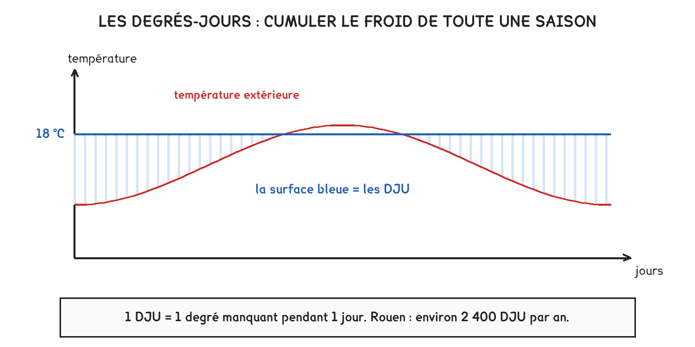
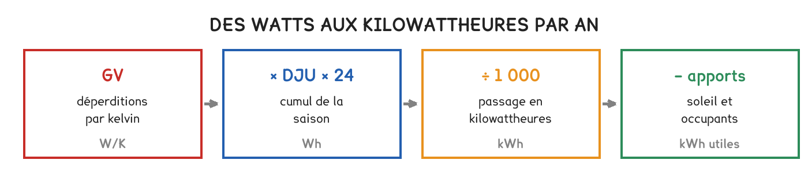

BTS FED option C · 2e année
La séance 4 a donné une puissance, pour une heure de l'année. Celle-ci donne une énergie, pour toute la saison — et c'est elle qui décide si des travaux valent leur prix.
1 outil · 8 questions · 3 exercices · 6 replis · 4 figures
Savoirs travaillés
La séance 4 a calculé une puissance : ce qu’il faut fournir au jour le plus froid. Elle ne dit rien de la facture, parce que ce jour-là ne dure pas.
Cette séance passe de la puissance à l’énergie, et de l’énergie à l’argent. C’est le seul savoir de thermique du bâtiment que le référentiel place au niveau 3 pour l’option C.

Le GV de la séance 4 ne dépend pas du temps qu’il fait. Il suffit donc de savoir combien de froid la saison a apporté — c’est ce que comptent les degrés-jours.
Besoin brut = GV × DJU × 24 / 1 000
Notre maison : 151 × 2 300 × 24 / 1 000 = 8 320 kWh de besoin brut.
Le GV appartient au bâtiment, les DJU appartiennent au climat. Deux maisons identiques à Nice et à Strasbourg ont le même GV et des besoins très différents. C’est ce qui permet de comparer des bâtiments entre eux, une fois le climat retiré.
Le bâtiment ne se chauffe pas seulement avec sa chaudière. Le soleil entre par les vitrages, les occupants dégagent une centaine de watts chacun, et les appareils finissent tous en chaleur.
Besoin net = besoin brut − apports gratuits
Les apports gratuits ne se déduisent jamais d’un calcul de puissance. Au jour le plus froid, à six heures du matin, il n’y a ni soleil ni occupants. Ils n’entrent que dans le besoin annuel — la séance 4 les ignorait à juste titre.

Le besoin net est de l’énergie utile. Ce qu’on paie dépend ensuite du rendement de la production et du prix du vecteur choisi.
| Vecteur | Prix indicatif du kWh | Facture annuelle |
|---|---|---|
| Gaz | 0,12 € | ≈ 750 € |
| Électricité | 0,25 € | ≈ 1 560 € |
Temps de retour = coût des travaux / économie annuelle
Isoler une toiture qui passe de U = 0,90 à 0,16 fait gagner 54,8 W/K, soit 2 270 kWh par an. Doubler un isolant déjà bon, de 0,16 à 0,12, n’en fait gagner que 123.
| Travaux | Économie | Coût | Retour |
|---|---|---|---|
| Isoler une toiture nue | 2 270 kWh/an | 3 500 € | 6 à 13 ans |
| Doubler un isolant existant | 123 kWh/an | 1 500 € | environ 50 ans |
On isole d’abord ce qui n’est pas isolé. Les rendements de l’isolation sont décroissants : les dix premiers centimètres rapportent beaucoup, les dix suivants presque rien, parce qu’on ajoute une résistance à une résistance déjà grande.
À observer en entreprise
Relever la consommation annuelle de chauffage du bâtiment — sur une facture, un compteur d’énergie, ou auprès du service technique — ainsi que la surface chauffée.
Calculer le ratio en kWh/(m²·an) et le situer sur l’échelle des classes énergétiques. Relever le prix du kWh effectivement payé. Identifier le poste de déperdition le plus improductif du bâtiment, et estimer ce que coûterait de le traiter.
Exercice · A2-4
Un bâtiment de GV = 151 W/K est situé dans une zone à 2 300 DJU. Quel est son besoin brut de chauffage sur la saison ?
Exercice · A2-4
Isoler une toiture de 74 m² fait passer son U de 0,90 à 0,16 W/(m²·K). Sous 2 300 DJU, quelle économie brute annuelle, en kWh ?
Exercice · A2-4
Isoler une toiture nue se rembourse en une dizaine d’années ; doubler un isolant existant en une cinquantaine. Expliquez d’où vient cet écart.
Pour aller plus loin
Un degré-jour n’est pas une température : c’est une accumulation. Pour chaque jour de la saison où il fait plus froid qu’un seuil, on compte l’écart entre ce seuil et la température moyenne du jour, puis on additionne tout.
DJU = Σ (18 − θ moyenne du jour), pour les jours où θ moyenne < 18 °C
Pourquoi 18 et non 20, alors qu’on chauffe à 20 ? Parce que les deux degrés manquants sont précisément les apports gratuits. La convention suppose que le soleil, les occupants et les appareils fournissent en permanence l’équivalent de 2 K. C’est une approximation, et elle est calibrée sur un bâtiment moyen.
Le besoin calculé avec des DJU base 18 contient donc déjà une partie des apports. Retirer ensuite 25 % d’apports revient à les compter deux fois. Selon les usages, on retire une part plus faible, ou on part de DJU base 20. Le sujet dit toujours quelle convention il retient — et on ne mélange pas les deux.
Les DJU se lisent, ils ne se calculent pas. Ils sont publiés par station météo et par saison, sur une moyenne de trente ans pour le dimensionnement, ou sur l’année réelle pour l’analyse d’une facture. Deux usages, deux valeurs.
Les ordres de grandeur français, à reconnaître :
| Zone | DJU base 18 |
|---|---|
| Littoral méditerranéen | 1 200 à 1 600 |
| Façade atlantique | 1 900 à 2 300 |
| Bassin parisien, Normandie | 2 200 à 2 500 |
| Est, Massif central, montagne | 2 800 à 4 000 |
Un facteur trois entre le sud et la montagne. Le même bâtiment y consomme trois fois plus — et c’est pourquoi une comparaison de consommations entre deux sites n’a aucun sens tant qu’on n’a pas corrigé du climat.
Vingt-cinq pour cent du besoin d’un bâtiment sont couverts sans rien payer. Encore faut-il savoir d’où ça vient, parce que la part varie beaucoup d’un bâtiment à l’autre.
Trois sources, très inégales :
| Source | Ordre de grandeur | Ce qui la fait varier |
|---|---|---|
| Le soleil | souvent la moitié des apports | l’orientation, la surface vitrée, les masques, les protections |
| Les occupants | ≈ 100 W par personne | la densité d’occupation et les horaires |
| Les équipements | tout ce qui consomme finit en chaleur | l’usage : bureaux et cuisines en produisent beaucoup |
Pourquoi la part varie du simple au double. Un immeuble de bureaux dense, bien vitré au sud, peut voir ses apports couvrir 40 % de son besoin — au point d’avoir besoin de rafraîchir en mi-saison alors qu’il gèle dehors. Une maison peu occupée, orientée au nord, plafonne à 15 %.
Plus un bâtiment est isolé, plus la part des apports grandit. Le besoin diminue, les apports ne changent pas : leur part relative monte. Sur un bâtiment passif, les apports peuvent couvrir l’essentiel de la saison — c’est même la définition du standard.
Le revers, qu’un dossier mentionne toujours : ce qui chauffe gratuitement l’hiver surchauffe l’été. La grande baie sud qui apporte du gratuit en janvier impose une protection solaire en juillet, sans quoi le confort d’été s’effondre. Les apports ne sont pas un gain net : ils sont un gain saisonnier et une charge saisonnière, et c’est le même vitrage qui fait les deux.
Un apport n’est utile que s’il arrive au bon moment. Le soleil de midi dans un bâtiment vide ne sert à rien — la chaleur est perdue si la masse ne la stocke pas jusqu’au soir. C’est l’inertie de la séance 3 qui décide si un apport est utilisé ou gaspillé.
C’est le calcul le plus demandé sur ce savoir, et il tient en une division. Sa simplicité est aussi sa limite.
La méthode, en quatre lignes :
Le prix du kWh change le résultat du simple au double. Notre toiture se rembourse en 13 ans au gaz et en 6 ans à l’électricité — pour les mêmes travaux et la même économie d’énergie. Un temps de retour sans le prix retenu ne veut rien dire : on l’écrit toujours.
Les trois choses que ce calcul ignore, et qu’un bureau d’études réintroduit :
Le temps de retour classe des solutions ; il ne décide pas seul. Un travaux à retour long peut être le bon si l’échafaudage est déjà monté, et un travaux à retour court peut être mauvais s’il empêche un travaux meilleur plus tard. C’est la logique du bouquet de travaux, et elle vaut mieux que la somme des gestes isolés.
Le classement énergétique d’un logement est devenu un enjeu économique majeur — il conditionne la valeur d’un bien et, désormais, la possibilité de le louer. Il faut donc savoir ce qu’il mesure réellement.
Deux étiquettes, pas une. L’une classe la consommation d’énergie, l’autre les émissions de gaz à effet de serre. Un logement peut être bien classé sur l’une et mal sur l’autre : c’est le cas typique d’un bâtiment isolé mais chauffé au fioul, ou d’un bâtiment moyen chauffé par un réseau de chaleur biomasse.
Ce que l’étiquette agrège, et qui explique bien des surprises : elle ne mesure pas que le chauffage. Elle couvre aussi l’eau chaude sanitaire, le refroidissement, l’éclairage et les auxiliaires. Un bâtiment très bien isolé mais avec une production d’ECS médiocre peut être mal classé.
Ce qu’elle ne dit pas :
Les seuils de classes, les indicateurs retenus et le calendrier des obligations relèvent de la réglementation : ils ont déjà changé plusieurs fois et changeront encore. Le sujet d’épreuve fournit l’extrait applicable. Ce qui se retient, c’est la double étiquette, ce qu’elle agrège, et le fait qu’elle repose sur des conventions.
Un bureau d’études annonce 6 240 kWh, l’exploitant en relève 9 000. Ce n’est pas nécessairement une erreur de calcul : c’est le phénomène le plus documenté du bâtiment, et il a quatre causes qu’on sait démêler.
1 — Le climat réel n’est pas le climat moyen. Le calcul utilise des DJU de référence sur trente ans ; l’année écoulée a été plus froide ou plus douce. La correction se fait avant toute autre analyse :
consommation corrigée = consommation relevée × DJU de référence / DJU de l’année
Une année à 1 950 DJU au lieu de 2 300 explique à elle seule 15 % d’écart.
2 — L’usage n’est pas celui de la convention. La consigne réelle, les horaires d’occupation, les fenêtres ouvertes. Sur un écart moyen de 11 K pendant la saison, deux degrés de consigne en plus représentent de l’ordre de 18 % de consommation supplémentaire — sans qu’aucun équipement soit en cause.
3 — Les hypothèses du calcul étaient optimistes. Perméabilité à l’air supposée meilleure qu’elle n’est, ponts thermiques sous-estimés, débit de ventilation réglé au-dessus du dimensionnement.
4 — L’installation ne fonctionne pas comme prévu. Loi d’eau mal réglée, réduit qui ne s’applique pas, réseau déséquilibré compensé par une température de départ trop haute, deux batteries qui se combattent. C’est la cause la plus fréquente, et la seule qui se corrige sans travaux.
L’ordre du diagnostic est celui de cette liste. On corrige du climat, on vérifie l’usage, on relit les hypothèses, et on ne conclut à un défaut d’installation qu’après. Un exploitant qui saute les trois premières étapes règle des paramètres qui n’étaient pas en cause.
C’est là que cette séance rejoint la séquence 5 : la signature énergétique de la séance 19 est exactement l’outil qui permet de faire ce tri, en portant les consommations relevées face aux températures relevées. Le besoin calculé ici est la prévision ; la signature en est la vérification.
Cette séance calcule ce que coûte l’énergie. Sur un circuit frigorifique, il y a un second coût, invisible sur la facture : le fluide qui s’échappe.
Une climatisation de bureaux contient 5 kg de R410A et fuit lentement — un tiers de sa charge en une saison, ce qui n’a rien d’exceptionnel sur un circuit mal brasé.
| Ce que la fuite coûte | |
|---|---|
| Recharge, 1,7 kg à environ 80 €/kg | 140 € |
| Équivalent CO₂ relâché | 3,5 t |
| Surconsommation de la machine, charge incomplète | 10 à 20 % |
La surconsommation coûte souvent plus cher que la recharge. Une machine sous chargée n’a plus assez de fluide pour remplir son évaporateur : la surchauffe s’envole, la puissance frigorifique tombe, et la machine tourne plus longtemps pour le même service. Le client paie deux fois.
Le calcul de rentabilité de la séance s’applique tel quel. Une recherche de fuite coûte quelques centaines d’euros ; deux saisons de fuite lente en coûtent autant, plus le CO₂. Le temps de retour se compte en mois, ce qui est rare parmi les travaux d’économie d’énergie.
Et le CO₂ change complètement l’arbitrage. Ces 3,5 tonnes équivalent, à 0,060 kg de CO₂ par kilowattheure d’électricité française, valent près de 58 000 kWh — plus que ce que la climatisation consommera en dix ans. Sur une machine à fort GWP, la fuite pèse plus lourd que la consommation.
Cette page rappelle la séance. Elle ne remplace pas le polycopié et ne donne aucun corrigé. Tous les calculs se font dans votre navigateur ; rien n'est enregistré.